Start a new app
On the My Apps page, select Create App.
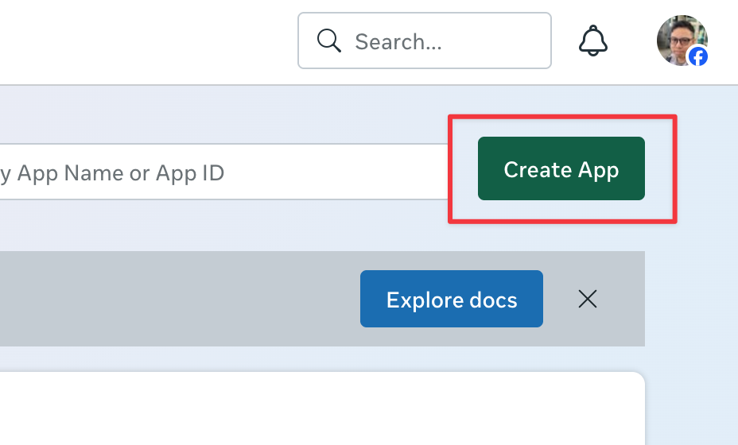
Enter the app details
Set the app name to ThreadsBackup, or choose any name you like. Confirm that the contact email is correct, then select Next.
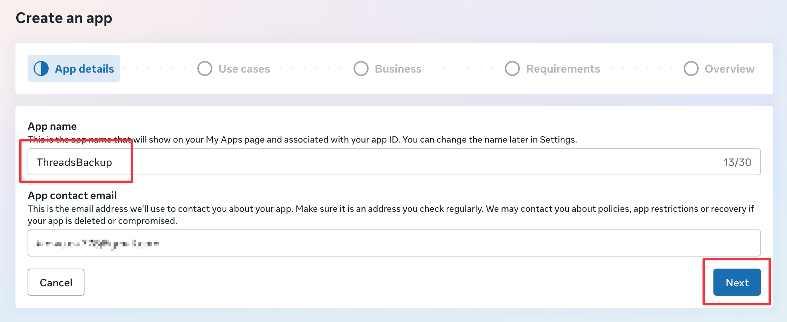
Select the Threads API use case
Choose Access the Threads API, then continue.
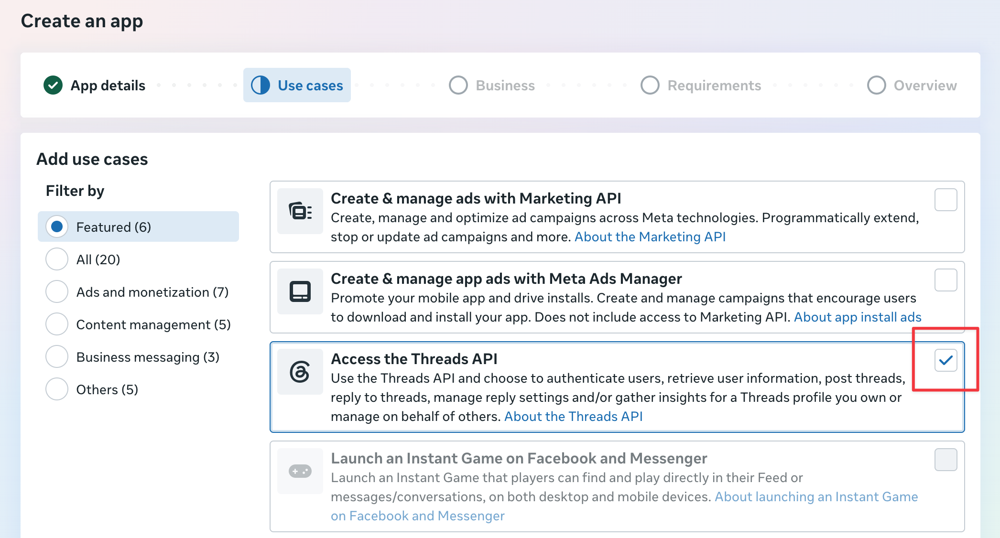
Skip the business portfolio
Select I don’t want to connect a business portfolio yet, then select Next.
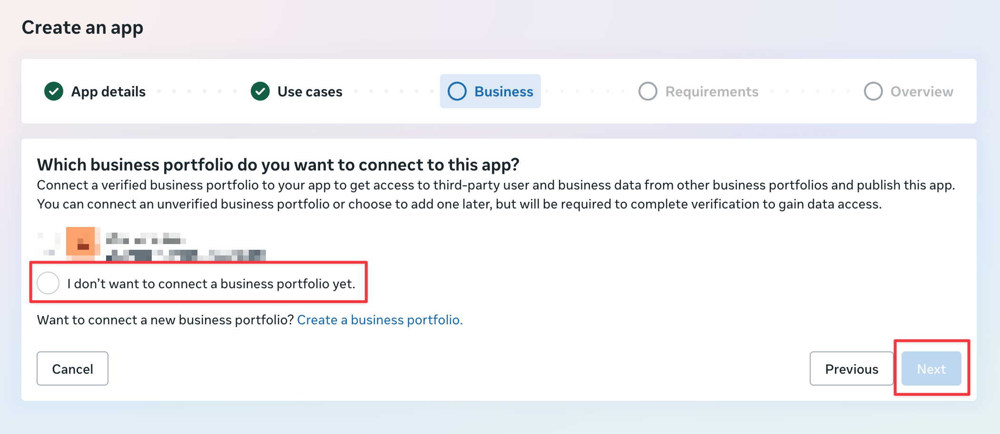
Review the requirements
If no publishing requirements are listed, select Next.
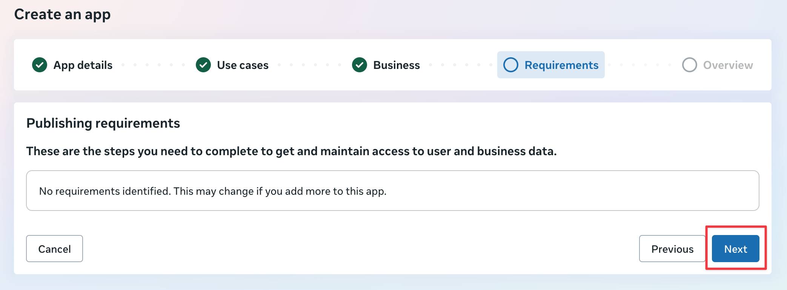
Review and create the app
Check the app name, Threads API use case, business choice, and requirements. Then select Create app.
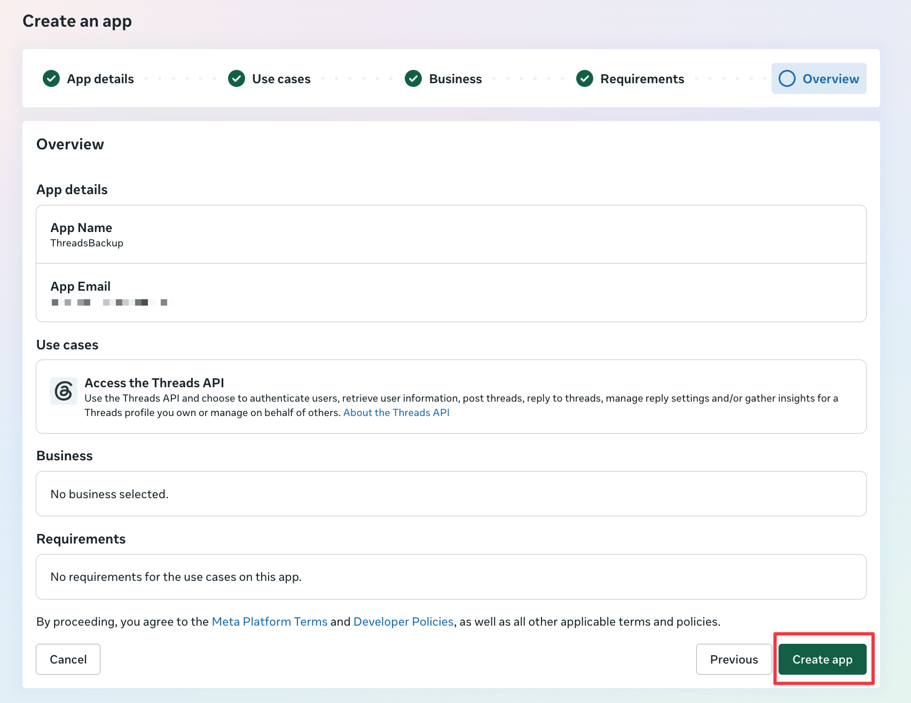
Confirm your password
Re-enter your Facebook password and select Submit. Your Meta app is now created.
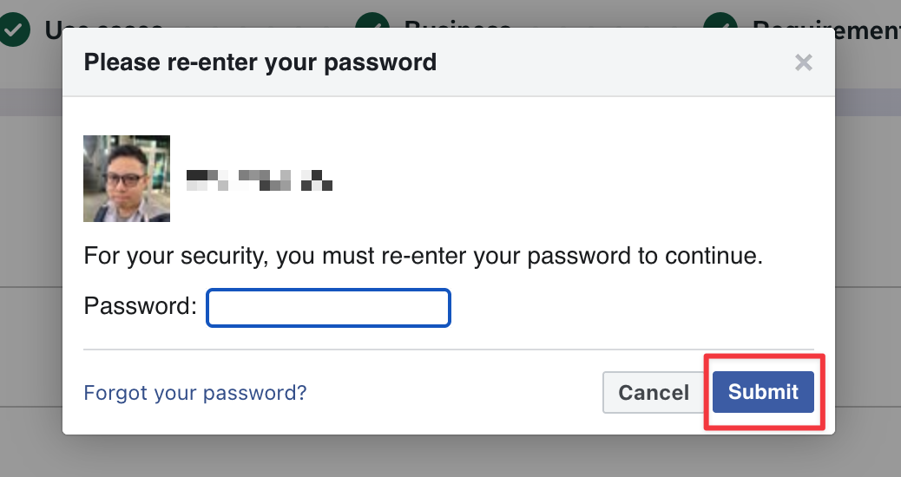
Step 1 complete
Your Meta app is ready
Continue below to find the credentials that ThreadsBackup will use.
Step 2 of 5
Get the Threads app ID and app secret
Open the Threads API settings in your new Meta app, then copy the two credentials you will need in Step 3.
Open the Threads API settings
In your app dashboard, select Use cases in the sidebar. Find Access the Threads API, then select Customize.
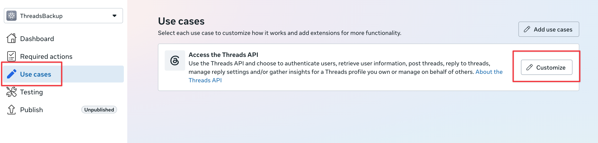
Copy the app ID and app secret
On the Settings page, copy the Threads app ID. Select Show beside the Threads app secret, confirm your password if prompted, then copy the secret.
Keep the app secret private
Treat it like a password. Do not post it publicly or commit it to Git.
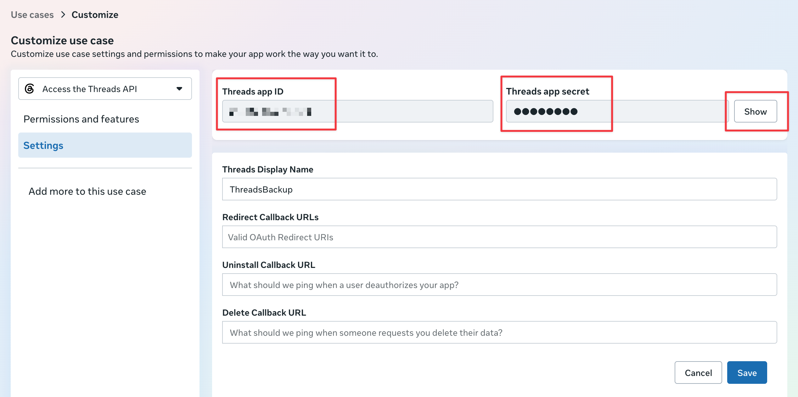
Step 2 complete
Keep both credentials ready
You will enter the Threads app ID and app secret when you configure ThreadsBackup in Step 3.
Step 3 of 5
Set up callback URLs with a Cloudflare Quick Tunnel
ThreadsBackup starts a temporary HTTPS tunnel so Meta can securely return you to the local app after authorization. A Cloudflare account is not required for a Quick Tunnel.
Start ThreadsBackup and copy the callback URL
From the directory containing your .env file, run threads-backup. The CLI starts the local callback server and Cloudflare Quick Tunnel automatically. Copy the complete Callback URL, including /oauth/callback, and leave the terminal running.
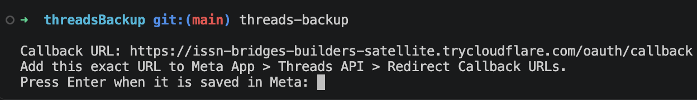
Register the callback URL in Meta
Return to Use cases → Access the Threads API → Customize → Settings. Paste the exact URL into Redirect Callback URLs and press Enter so it becomes a saved entry. Paste the same URL into Uninstall Callback URL and Delete Callback URL, then select Save.
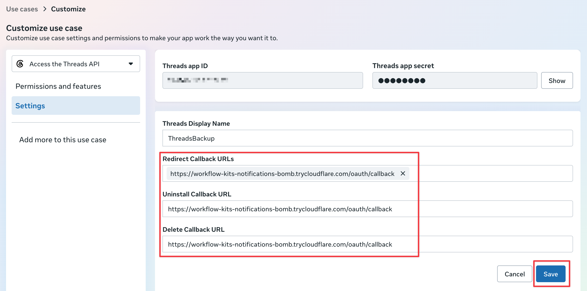
Leave the terminal open
Do not press Enter yet. Keep ThreadsBackup and the Quick Tunnel running while you add and accept your Threads tester invitation in Step 4.
Optional alternative
Create a fixed CLOUDFLARED_TUNNEL
Use a fixed tunnel if you want a stable callback URL that only needs to be registered in Meta once. This replaces the Quick Tunnel flow above and requires a Cloudflare account plus a domain managed by Cloudflare.
Create a Cloudflare Tunnel
In the Cloudflare dashboard, open Networking → Tunnels, then select Create Tunnel.
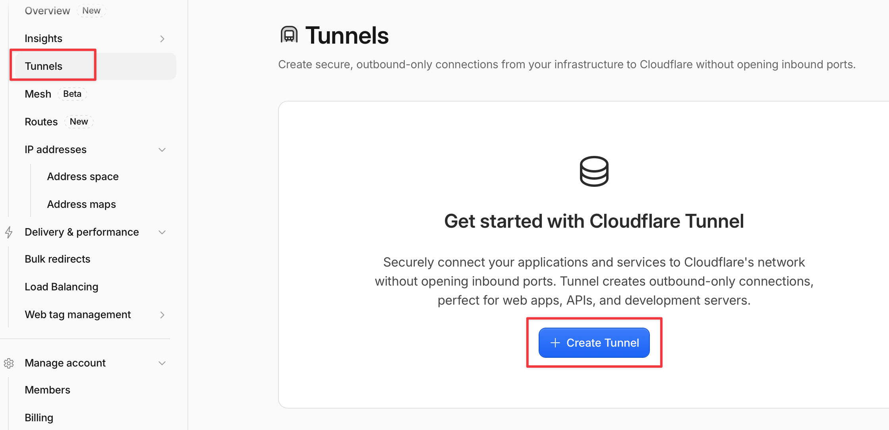
Name the tunnel
Enter threadsbackup, or another memorable name, then select Create Tunnel. Keep the exact name—you will add it to .env later.
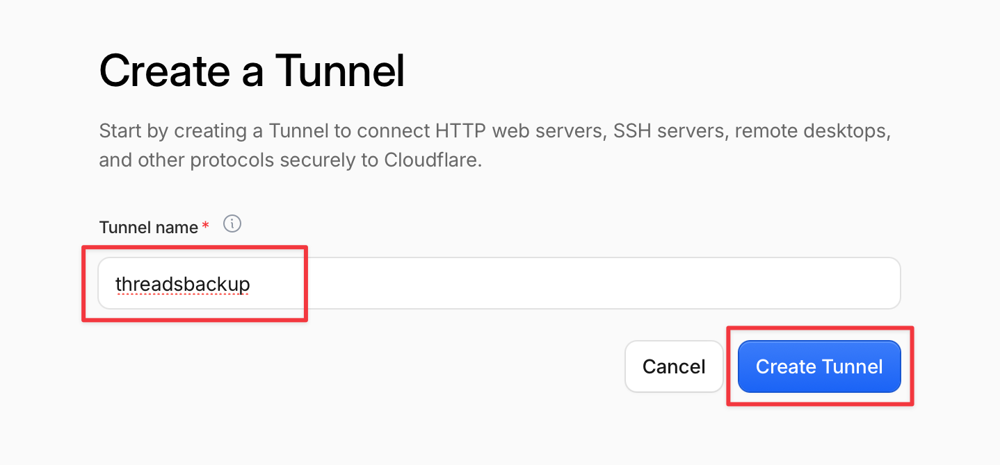
Connect cloudflared
Choose your operating system and run the installation or service command provided by Cloudflare on the ThreadsBackup computer. Wait for Tunnel connected successfully, then select Continue.
Keep the tunnel token private
The command contains a secret token that can run your tunnel. Do not share it or save it in Git.
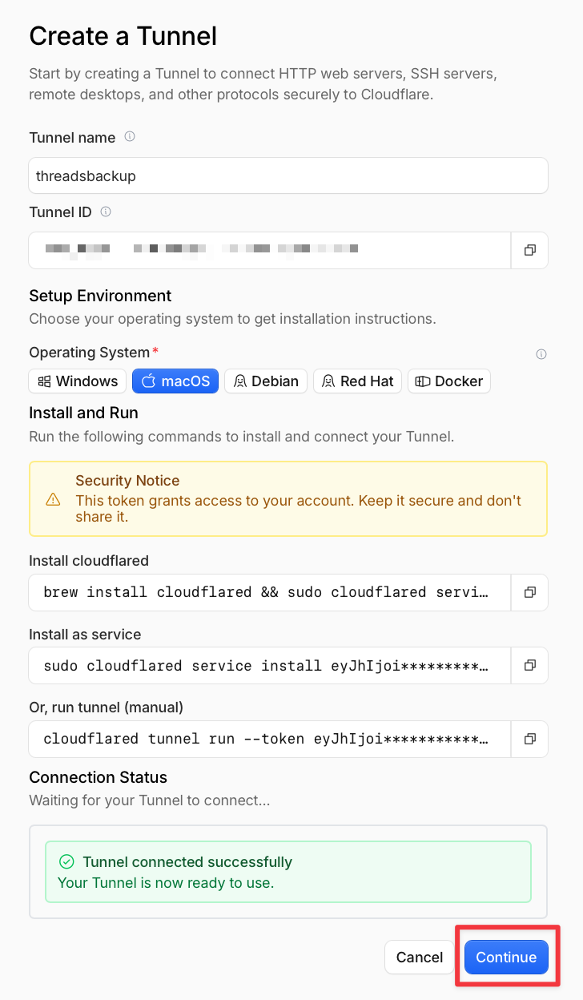
Add a route
Open the tunnel’s Routes tab and select Add route.
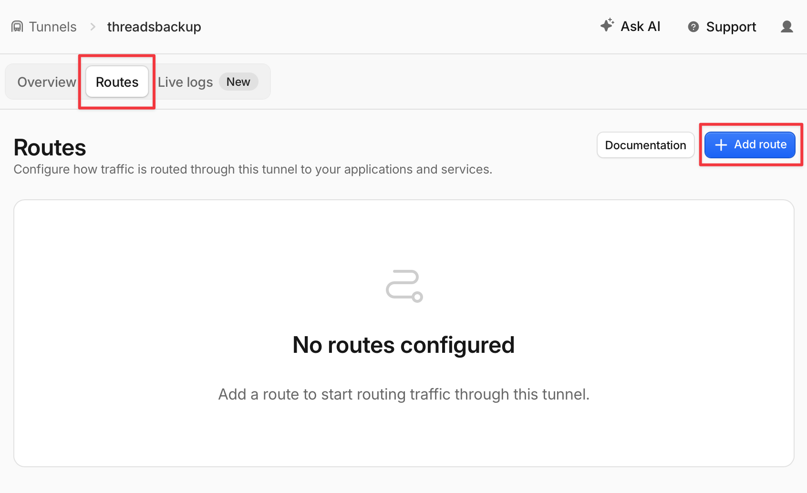
Choose Published application
Select Published application so Meta can reach the local OAuth callback through a public hostname.
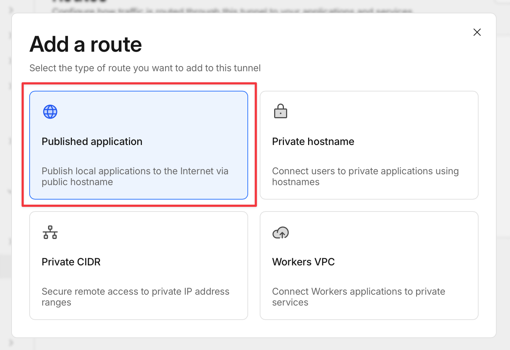
Configure the hostname and service
Choose a subdomain and one of your Cloudflare-managed domains. Leave Path empty. Set Service URL to http://127.0.0.1:8787, then select Add route or Save changes.
Use HTTP for the local service
ThreadsBackup’s callback server uses plain HTTP on localhost. If you changed PORT, use that same port here.
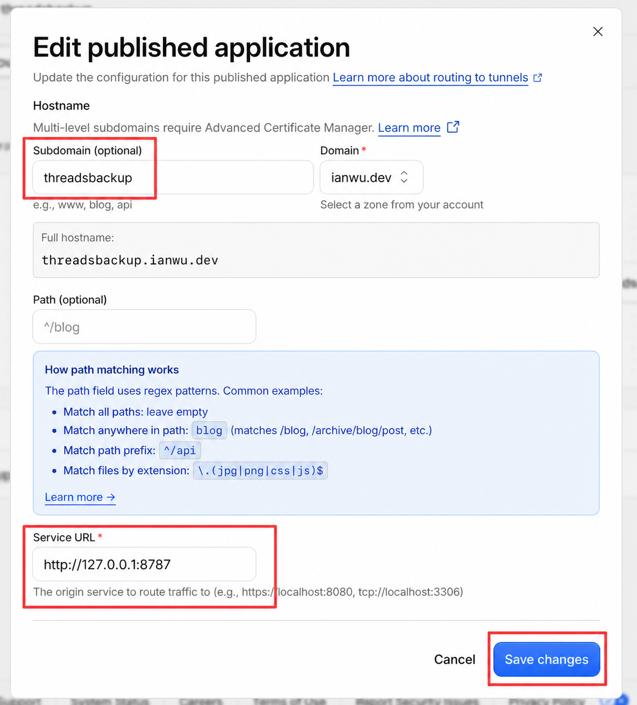
Confirm the public hostname
Cloudflare creates the DNS record automatically. Copy the confirmed hostname and append /oauth/callback. For example: https://threadsbackup.example.com/oauth/callback.
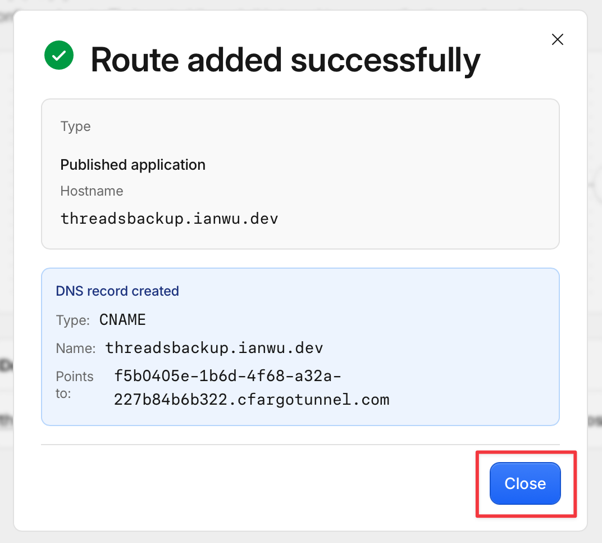
Configure ThreadsBackup
Add the full callback URL and exact tunnel name to your .env file. Register the same callback URL in all three Meta fields described above.
THREADS_REDIRECT_URI=https://threadsbackup.example.com/oauth/callback
CLOUDFLARED_TUNNEL=threadsbackupWhen you run threads-backup, the CLI reuses an active connector or temporarily starts the named tunnel for authorization.
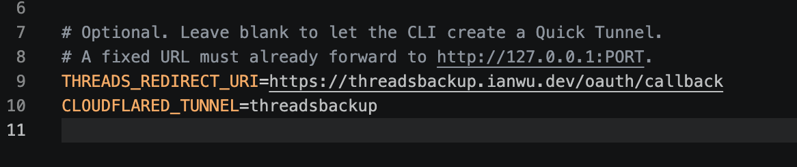
Step 3 complete
Your callback URLs are saved
Keep the terminal open and continue to Step 4 before starting authorization.
Step 4 of 5
Add your Threads account as an app tester
Your Meta app is unpublished and in development mode, so only people with an app role can use its Threads API integration. Invite the Threads account you want to back up and accept the invitation from that account.
Open App roles
In the Meta app dashboard, expand App roles in the sidebar, select Roles, then select Add People.
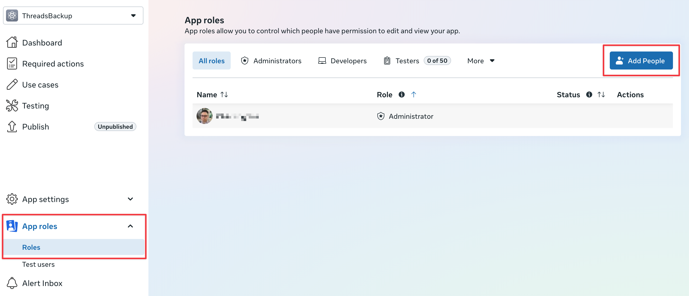
Invite the Threads account
Under Additional roles for this app, choose Threads Tester. Search for the Threads username you want to back up, select the matching account, then select Add.
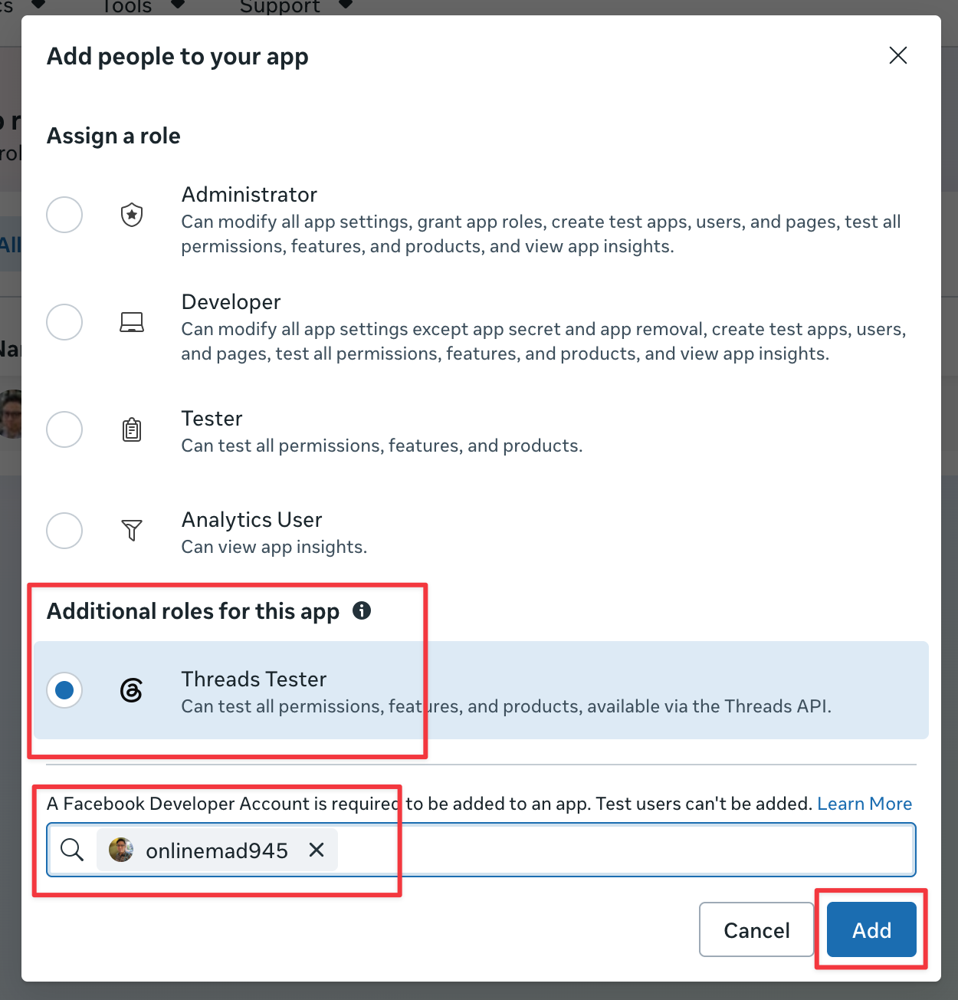
Confirm the invitation is pending
The account appears in App roles as a Threads Tester with a Pending status. The invitation is not active until it is accepted from Threads.
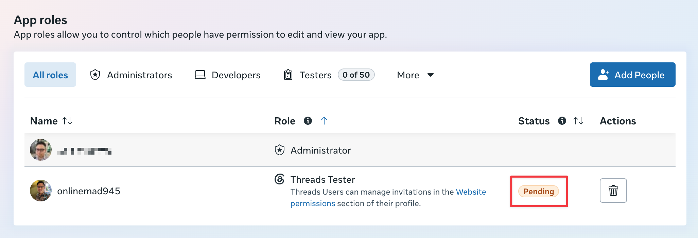
Open Threads settings
Sign in to the invited account on the Threads website. Open More, then select Settings. The labels may appear in your Threads display language.
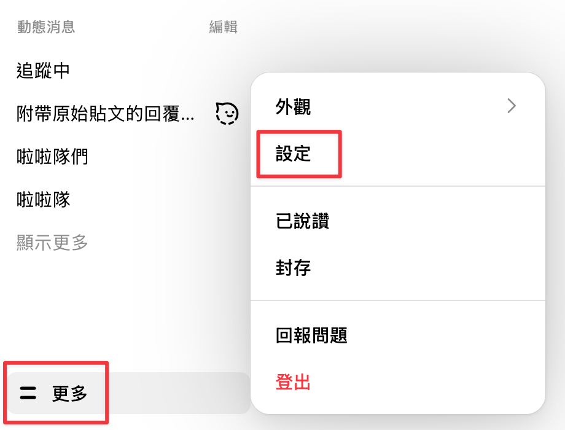
Open Website permissions
Open More settings, then select Website permissions.
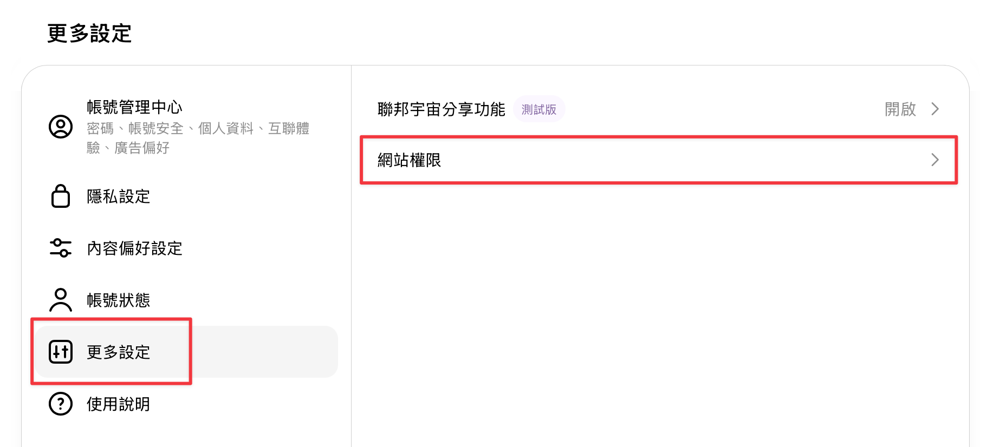
Accept the tester invitation
Open the Invitations tab, find your Meta app, and select Accept. Confirm any terms shown by Threads.
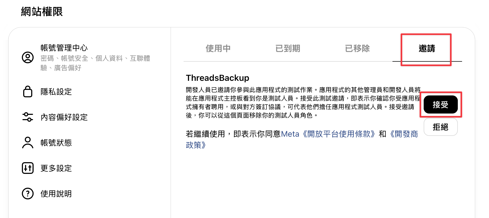
Verify the tester is active
Return to Meta App roles and refresh the page. The Threads Tester should remain listed without the Pending badge.
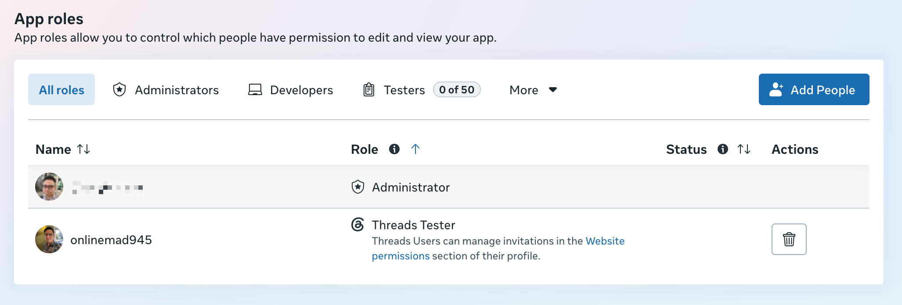
Step 4 complete
Your Threads tester is ready
Continue to Step 5 to authorize that account and start the first backup.
Setup complete
ThreadsBackup is backing up your account
Keep the terminal running until the backup summary appears. Future runs reuse the saved credentials and continue with an incremental backup.